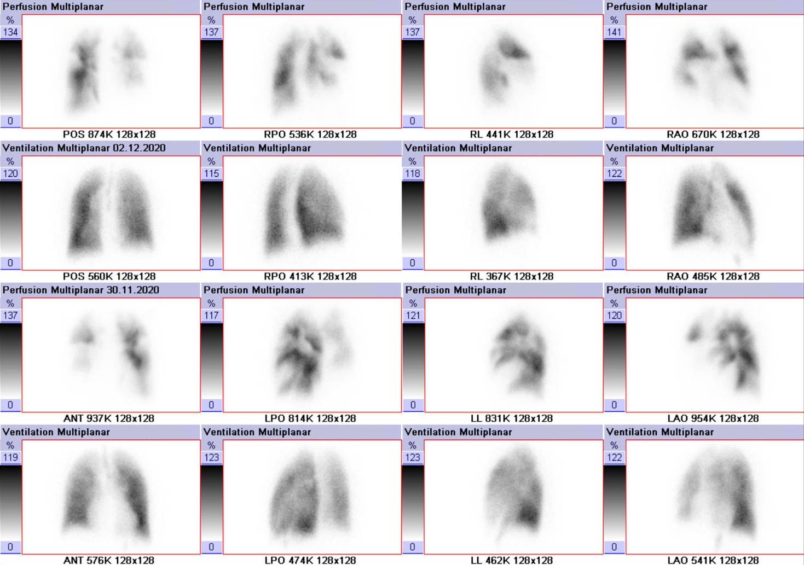
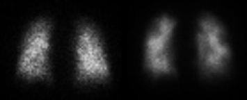

Entenda shunt e espaço morto — e depois faça o teste do oxigênio com o dedo: veja a PaO₂ subir no V/Q baixo e recusar-se a subir no shunt. Para a Dani.


Você já moveu o ar (Mód. 1) e seguiu o oxigênio (Mód. 2). Falta o encontro dos dois — e nele mora a pergunta mais prática do plantão.
Por que o oxigênio salva um paciente hipoxêmico e quase não toca em outro? A diferença tem nome, mecanismo, e — agora — um laboratório onde você vê a refratariedade do shunt ao O₂ calculada e desenhada.
Ajuste a fração de shunt (sangue sem ar) e de espaço morto (ar sem sangue), e a FiO₂. O gráfico plota a PaO₂ contra a FiO₂ — a curva de isoshunt. Suba o oxigênio e veja: no shunt alto, a curva achata e a PaO₂ se recusa a subir.
Modelo didático: equação do gás alveolar (PAO₂ = FiO₂·(760−47) − PaCO₂/0,8), equação do shunt com a curva de Severinghaus (Mód. 2), oxigênio dissolvido e diferença arteriovenosa fixa (~5 mL/dL). Hb fixada em 15 g/dL. A relação P:F usa as faixas de Berlim (≤300 leve, ≤200 moderada, ≤100 grave) e pressupõe o contexto clínico (PEEP ≥5, falha do tipo shunt/V-Q) — por isso o A–a entra como juiz: shunt alarga o A–a, hipoventilação não. Quando o paciente "não compensa", a PaCO₂ realimenta a equação alveolar — a queda de PaO₂ aí é hipoventilação, não shunt. Valores em ordem de grandeza fisiológica; o shunt verdadeiro (V/Q=0) é refratário, o V/Q apenas baixo responde ao O₂.